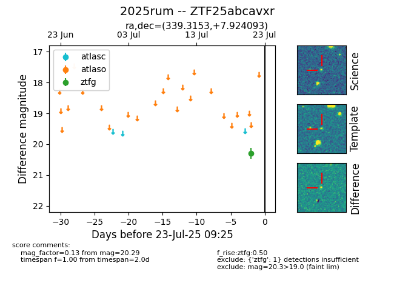

Target ZTF25abcavxr at 2025-07-23 11:52, see:
FINK: fink-portal.org/ZTF25abcavxr
Lasair: lasair-ztf.lsst.ac.uk/objects/ZTF25abcavxr
ALeRCE: alerce.online/object/ZTF25abcavxr
TNS: wis-tns.org/object/2025rum
YSE: ziggy.ucolick.org/yse/transient_detail/2025rum
alt names
ZTF25abcavxr (ztf,fink)
2025rum (tns,yse)
coordinates:
equatorial (ra, dec) = (339.3153,+7.92409)
galactic (l, b) = (75.2950,-42.20804)
photometry
last ztfg=20.29
1 ztfg detections
